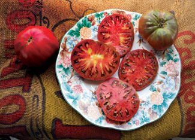
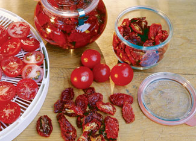
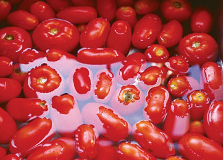
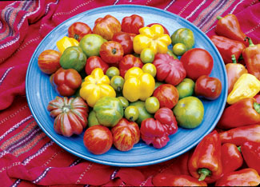
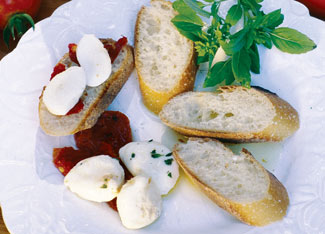
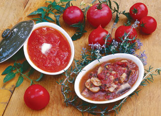
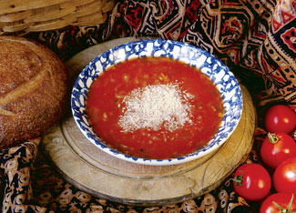
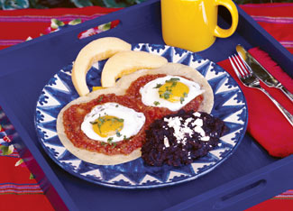

“Putting up tomatoes” has been part of my life since the ’50s, when I helped my mother and grandmother prep them for the freezer. Not too many folks had a freezer in those days, but my dad worked for General Electric, so our house had all the latest appliances. Like most food preservation events I’ve been part of, it was a group effort. Dad and the kids harvested tomatoes from his garden, then one of us washed them in the sink. Then my mom and grandmother took over. They skinned, seeded and chopped tomatoes for stewing, or cooked them down into sauces. By the end of the day the kitchen table was stacked with square containers, which we carried to the chest freezer in the basement. In the winter, those containers of summer goodness were transformed into lovely tomato soups, rich spaghetti sauces, thick meatloaf sauces and - my favorite - stewed tomatoes served with a big pat of butter in the middle.
In the ’60s, I married into a big-time canning family. I still remember those sweltering Pennsylvania days with baskets of tomatoes lined up on the kitchen table and a room full of busy, knowing women preparing tomatoes in large steaming kettles. By the end of the day, dozens of pints of stewed tomatoes and quarts of juice were ready for the pantry.
In the ’70s, my husband and I moved to California. I wanted a vegetable garden but our new back yard was shady - no place for tomatoes - and edible landscaping hadn’t yet occurred to me, so taking out the front lawn wasn’t an option. Soon an opportunity arrived to garden with my neighbor. With four children between us, we decided we could help our collective food budgets if we put a large garden in her back yard and bought a chest freezer to preserve our shared harvest. For four years, we enjoyed lots of beans, zucchini and corn, and hundreds of pounds of tomatoes. We usually turned the tomatoes into plain sauce, but at home I’d make a few batches of stewed tomatoes and tomato juice for old time’s sake.
California and the cooking of the times started to creep into our kitchen. My family now liked salsa and enchiladas. Dried tomatoes became a hit on pizzas, salads and bruschetta. A neighbor donated a dehydrator to our cause, and we dried even more tomatoes, as well as chilies from our garden and apples from her tree.
In 1984, I took the leap and removed the front lawn to grow more edibles, including dozens of tomato plants. So now I have tons of fresh garden tomatoes to put by each year, and over time I’ve developed some wonderful recipes and techniques. You may choose to can part of your harvest, but don’t overlook drying and freezing, two easy methods for storing a bountiful harvest that are especially good for preserving the flavors of ripe summer tomatoes.
Dried tomatoes have an intense flavor, are versatile, and keep for months in a cool, dry and dark spot. Just wash and drain tomatoes, then pat dry. Cut cherry tomatoes in half, slice paste tomatoes into a few pieces, and place them on a dehydrator tray. Follow the directions for your solar or electric food dryer. For more drying tips, see Reap the Garden & Market Bounty: How to Dry Food.
Dried tomatoes are generally rehydrated before eating. To rehydrate, pour boiling water or vegetable stock over them and let them sit for a few minutes, or until the skins are soft. Drain them in a strainer over a bowl. Add the leftover liquid to dressings, soups and sauces to zip up their flavor and nutrition.
Rehydrated tomatoes can be used whole in lasagna or pizzas, and are delicious served with fresh chevre on crusty bread. They also can be chopped or sliced for use in salad dressings, marinara, pasta and risotto, or made into a paste to add richness to hummus, pesto, cream sauces and soft cheeses. My favorite way to serve them is to add them to a garlic-and-herb olive oil marinade for fresh mozzarella.
Tomatoes can be frozen in many forms, from whole to a finished marinara sauce. Let’s start with the fastest technique, which is to freeze them whole, a great solution when time is short or the harvest ramps up. To prevent individual fruits from sticking together, I freeze them on a cookie sheet first, then package them in zippered freezer bags when they’re solid.
Frozen whole tomatoes turn mushy when thawed, so their use is limited to cooked recipes. To use them in sauces, simply thaw them, put them through a food mill to remove seeds and skins, and cook the sauce down to thicken it.
Individual frozen tomatoes are easy to use a few at a time, peeled and chopped, to add fresh garden flavor to a winter soup. Or chop half a dozen to combine with wilted winter greens and garlic, and serve over fresh pasta with parmesan cheese. To prepare, thaw them slightly and twist the skins; they’ll slip right off. Then let them thaw completely, and squeeze the tomatoes one at a time to expel the seeds. Drain slightly, and chop or add the pulp whole to a sauce.
Another great way to preserve tomatoes is to make a simple sauce and freeze it by the pint in bags. I cool the sauce to room temperature, then freeze bags of sauce flat on a cookie sheet. Flat packages are easy to stack in the freezer when it gets full.
But my favorite tomato treasures in the winter are stewed tomatoes, pre-made tomato-onion soup and a sauce I use for huevos rancheros, which I make every New Year’s Day with eggs from my hens.
There are four basic types of tomatoes, each with its own preserving virtues.
Serve this inspired dish as an appetizer with focaccia or in an antipasto plate. Use the leftover oil in salad dressings, marinades and dips. These will keep in the refrigerator for about a week.
1 cup dried tomatoes, whole or halved
3/4 pound fresh 1-inch mozzarella balls
8 cloves garlic, minced
1 tsp fresh thyme, chopped
1 tsp fresh marjoram or oregano, chopped
2 tsp fresh parsley, chopped
1 tsp whole green peppercorns
1/2 tsp salt
1/4 tsp freshly ground black pepper
11⁄4 cup extra virgin olive oil
In a small bowl, pour 1 cup boiling water over the dried tomatoes and let sit for at least 15 minutes, or until they are soft. Drain and set aside. Remove the mozzarella balls from their brine.
In a quart jar with a lid, add tomatoes, seasonings and cheese, each a little at a time. Pour the olive oil over the top making sure to cover all the ingredients. Refrigerate to marinate for at least 24 hours before using. Makes 1 quart.
This recipe is a time-honored tradition for preserving lovely ripe garden tomatoes, and it’s also great for canning. For more information about how to can tomatoes, see Learn to Can for Homegrown Flavor.
8 medium ripe tomatoes
1 tbsp olive or safflower oil
1 to 2 tbsp brown sugar
1/4 tsp dried thyme
1/2 tsp sea salt
Freshly ground black pepper, to taste
For serving (optional):
1 small onion, diced
8 to 10 mushrooms, sliced
Butter
Fresh rosemary sprig
To freeze: Dip tomatoes a few at a time in boiling water for 30 to 60 seconds. Then quickly dip them in cold water and peel. Cut the peeled tomatoes into quarters and lightly squeeze the chunks to remove most of the seeds. Heat oil in a saucepan over medium heat. Add tomatoes, brown sugar, thyme, and salt and pepper. Simmer for 10 minutes or until the juice has reduced about one-third. Cool to room temperature and freeze in a zippered freezer bag.
To serve: Sauté the onion and mushrooms with a little butter, over medium heat, until the onions are translucent (about 15 minutes). Add the thawed stewed tomatoes plus a pinch of fresh rosemary, heat and serve. Yields 1 pint.
Any type of flavorful tomato can be used in this recipe, and while this version is made with rosemary and oregano, almost any Italian herbs, such as basil and parsley, will taste great. Use whatever is fresh and on hand. This soup freezes beautifully.
1 tbsp olive oil
3 large yellow onions, peeled and thinly sliced (about 6 cups)
2 cloves garlic, minced
2 slices of prosciutto or Canadian bacon, sliced thin (optional)
16 to 18 ripe all-purpose tomatoes, such as ‘Early Girl’ or ‘Celebrity,’ cored and coarsely chopped\
11⁄2 to 2 cups low-sodium chicken or vegetable stock
2 tsp fresh rosemary, finely chopped
2 tsp fresh oregano, finely chopped
Salt and freshly ground pepper, to taste
For garnish: parmesan cheese
Heat oil in a large frying pan, then add onions, garlic and prosciutto. Sauté over low heat for about 25 minutes or until the onions are soft and translucent. Set the mixture aside.
Put the tomatoes in a large saucepan, and simmer uncovered for about 30 minutes. Strain the seeds and skins from the tomatoes by putting them through a food mill or sieve.
Pour the tomato purée and stock into a large saucepan. As some tomatoes are much juicier then others, adjust the amount of stock by judging the thickness of the soup you prefer. Add the onion mixture, rosemary and oregano. Simmer for about 10 minutes to let flavors blend. Add salt and pepper to taste. Serve with grated parmesan cheese. Serves 4.
The foundation of this sauce is grilled tomatoes and onions. I toast them over my gas grill. Traditionally they are grilled over an open fire on a flat cast iron skillet called a comal. You could also roast them under an electric broiler or on a charcoal grill.
Like many classic Mexican sauces, this one is “fried,” and it's great in enchiladas, casseroles, huevos rancheros, and over chili rellenos. I keep plenty in the freezer to use in a wide variety of recipes.
1 medium white onion, peeled and quartered
6 to 8 large paste tomatoes (alternative: 11⁄2 pounds tomatillos, husked)
2 cloves garlic, unpeeled
1 to 2 serrano peppers
1 tbsp vegetable oil
1 tsp salt
1/2 tsp sugar (optional)
1/2 tsp dried Mexican oregano
Freshly ground black pepper, to taste
Grill the onion and tomatoes, turning occasionally with tongs so they cook evenly. The object is to lightly brown the outsides but not cook them through or they’ll disintegrate. In a dry pan, toast the garlic and peppers until the skins are brown. Peel the garlic, remove the seeds from the serranos, and peel and seed the tomatoes.
Purée all the vegetables in a food processor. Heat the oil in a saucepan, and add the vegetables. Add the salt, sugar and oregano, and simmer for about 20 minutes. If the tomatoes are acidic, add more sugar. Season with freshly ground black pepper. Yields 2 cups.
|
 WILLIAM D. ADAMS Learn to freeze and can fresh tomatoes, such as these ‘Black Krim’ tomatoes, to enjoy their spectacular flavor even in cold months. |
 ROSALIND CREASY Dried tomatoes have all the great flavor of fresh garden tomatoes, but even more concentrated. |
 ROSALIND CREASY There are plenty of ways to preserve fresh tomatoes, so you can choose the method that best accommodates your cooking style and amount of storage space. |
|
 DAVID CAVAGNARO There are four basic types of tomatoes: meaty paste tomatoes, small cherry tomatoes, standard slicing tomatoes and superjuicy beefsteak tomatoes. |
 ROSALIND CREASY Mozzarella Cheese Marinated with Dried Tomatoes and Herbs. After you've enjoyed all the cheese and tomatoes, you'll be left with an incredible olive oil. |
 ROSALIND CREASY Stewed tomatoes are the antidote to wintertime garden flavor amnesia! |
|
 ROSALIND CREASY Tomato and Onion Soup with Rosemary. This rich soup honors the centuries-old pairing of tomatoes and onions. |
 ROSALIND CREASY Mexican ranchero sauce. The foundation of this sauce is grilled tomatoes and onions. Like many classic Mexican sauces, this one is “fried,” and it's great in enchiladas, casseroles, huevos rancheros, and over chili rellenos. Keep plenty in the freezer to use in a wide variety of recipes. |
|